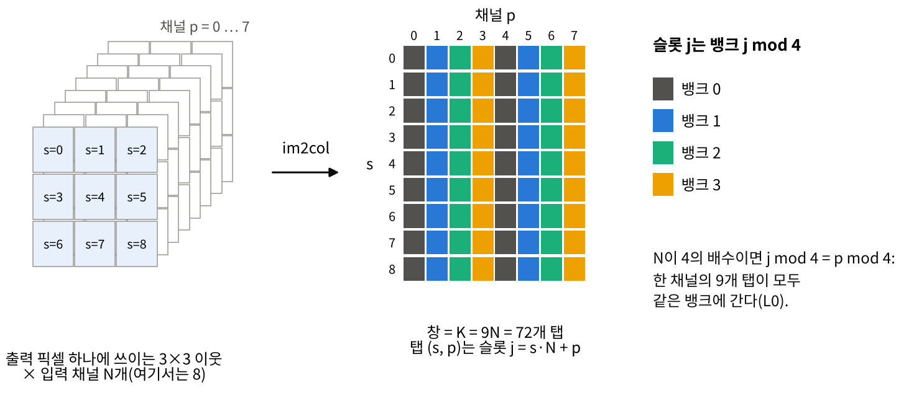
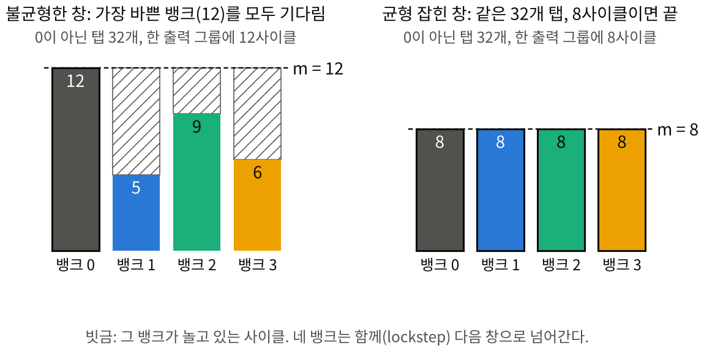
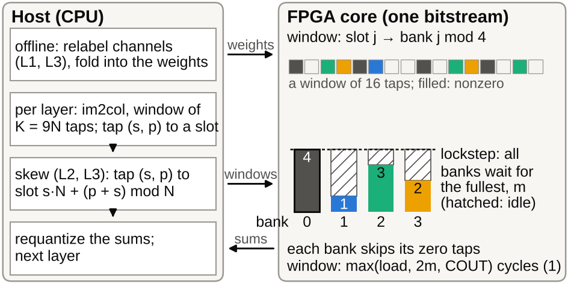
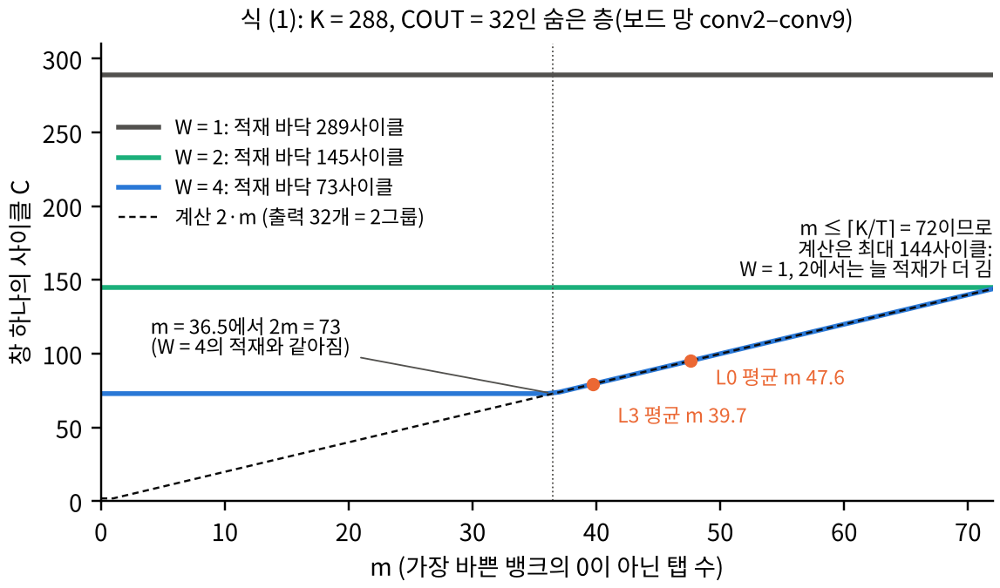
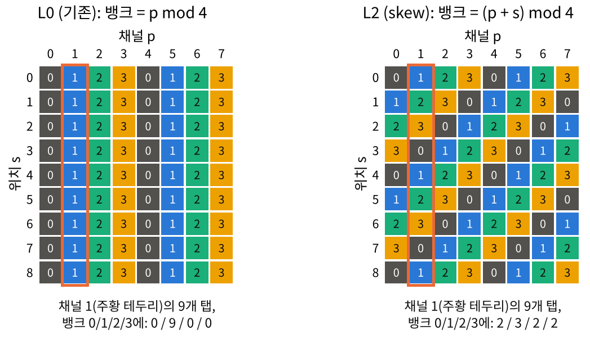
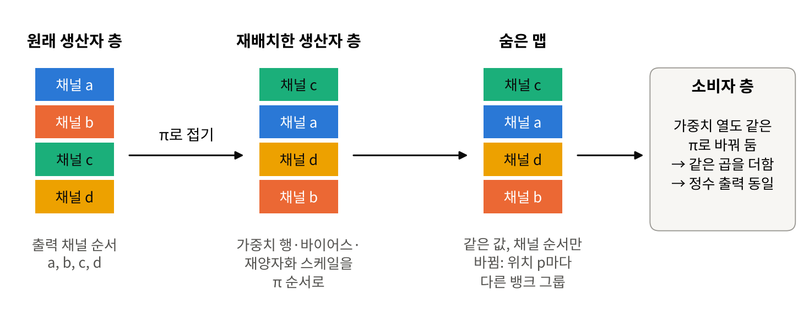
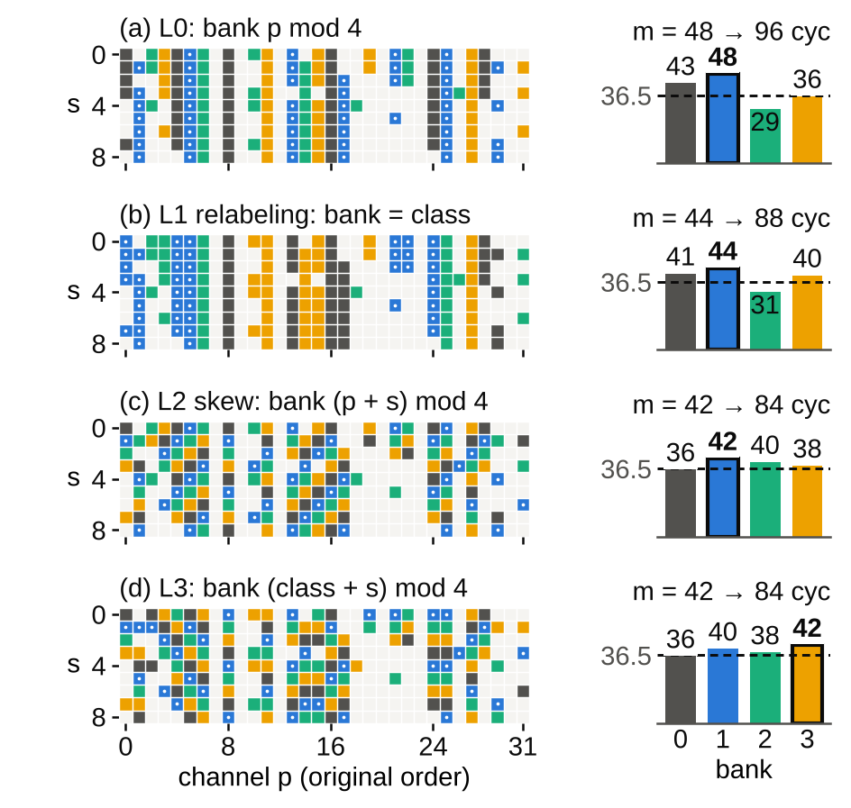
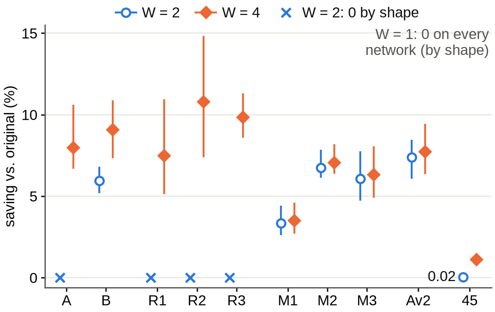
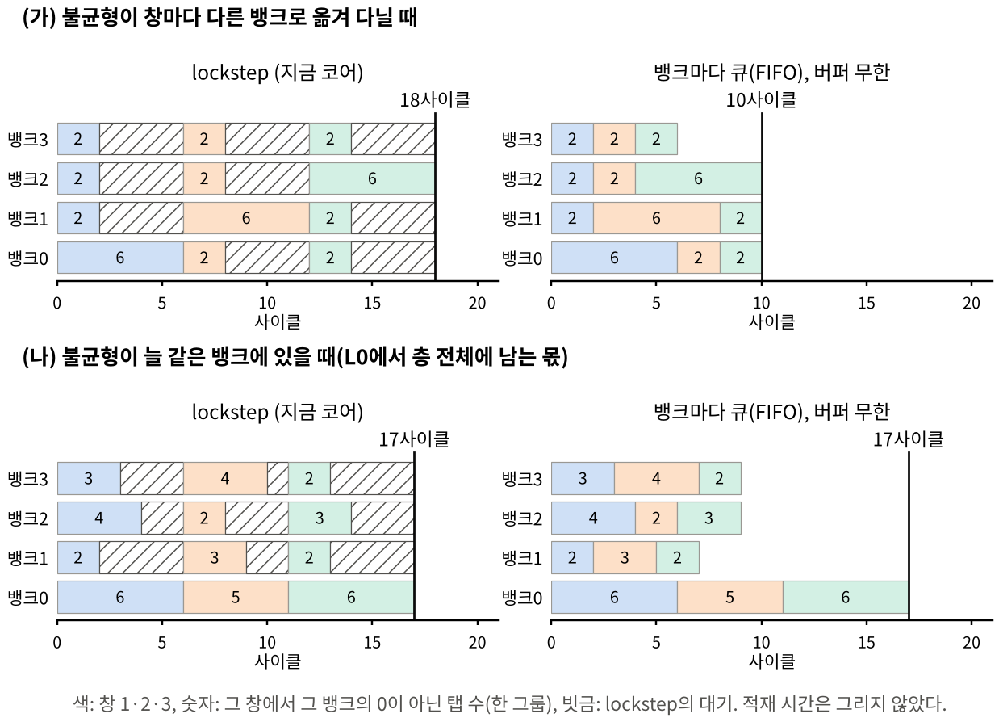

0인 활성값을 건너뛰는 CNN 가속기는 합성곱의 한 창(window)을 여러 뱅크에 나눠 병렬로 처리한다. 그런데 뱅크들은 함께(lockstep) 다음 창으로 넘어가므로, 창마다 0이 아닌 값이 가장 많은 뱅크를 나머지가 기다린다. 이 대기가 0 건너뛰기로 얻은 이득을 깎아 먹는다.
우리 시스템에서는 호스트(PC)가 창을 만들어 FPGA에 보낸다. 그러니 창의 각 탭(값 하나)을 어느 슬롯에 넣을지, 즉 어느 뱅크로 보낼지를 호스트가 소프트웨어로 정할 수 있다. 탭의 배치(layout)를 바꾸면 사이클 수는 바뀌지만 FPGA 비트스트림도, 정수 출력도 그대로다.
| 결과 | 숫자 | 뜻 |
|---|---|---|
| skew L2 (데이터 없음) | 9.20% | 보드 망, 테스트 영상 79장, W = 4의 코어 사이클 절감(count: 보드 없이 호스트 에뮬레이션으로 센 사이클, 3.1절) |
| skew + 재배치 L3 | 9.93% | 같은 조건. 재배치 L1은 7.46%, 더 공들인 재배치 L1′은 8.10% |
| 완벽 균형(상한) | 12.02% | lockstep에서 어떤 배치로도 넘을 수 없는 값. L2는 그 76.6%, L3는 82.6% |
| 보드 측정, 4장 합산 | 8.13% / 8.80% | L2 / L3. 네 영상 모두 L3 < L2 < L1′ < L1 < L0 (사이클) |
| 사전 예측 적중 | 176 / 180 | 176층은 예측과 사이클 수가 정확히 같았고, 나머지 4층은 1사이클 많았다. 처음 돌린 L2·L3는 72층 중 71층이 정확 |
| 열 개 망 | 9 / 9 | 채널 수가 4의 배수인 9개 망 모두 L2 > L1, L3 > L2 (사전등록 가설 H5, H6) |
| CIFAR-10 분류기 | 3.47 / 8.54 / 9.10% | L1 / L2 / L3 (사전등록 밖). 같은 순서 |
| FIFO로 뱅크를 분리하면? | 최대 6.5% | L0의 뱅크 규칙을 유지하면 버퍼가 무한해도 이 이상 못 줄인다(계산한 상한). skew는 9.2% |
읽는 순서. 1–2장은 배경과 하드웨어, 3–4장은 사이클을 세는 식, 5장은 세 배치, 6–7장은 실험과 결과, 8–9장은 "왜?"에 대한 답, 10장은 한계, 11장은 예상 질문과 답이다. 기호가 헷갈리면 12장의 기호표를 보면 된다.
3×3 합성곱에서 출력 픽셀 하나는 입력의 3×3 이웃 9곳(위치 s = 0…8)과, 각 위치의 입력 채널 N개(채널 p = 0…N−1)를 본다. 그러니 출력 픽셀 하나에 필요한 입력값은 K = 9N개이고, 이 K개를 한 줄로 펼친 것을 창(window), 그 안의 값 하나하나를 탭(tap)이라 부른다. 출력 채널 COUT개 각각에 대해, 창의 K개 탭과 그 출력 채널의 가중치 K개를 곱해 더하면(내적) 출력값이 된다.
창을 펼치는 작업을 im2col이라 한다. 이 논문의 시스템에서는 호스트(PC)가 im2col을 해서 창을 FPGA로 보낸다. 탭의 기본 순서는 (ky, kx, 채널) 순, 즉 위치 s의 채널 p가 슬롯 j = s·N + p에 들어간다.

ReLU를 거친 활성값에는 0이 많다. 0을 곱하면 0이므로 그 곱셈은 건너뛰어도 결과가 같다. 이 논문의 보드 망(R1)에서는 숨은 층 창 값의 37–55%만 0이 아니다. 0인 탭을 건너뛰면 곱셈이 줄고, 계산이 창의 시간을 정할 때는 시간도 줄어든다(3장). 이것이 0 건너뛰기 가속기의 기본 아이디어다(Cnvlutin [1] 등).
한 창을 빨리 처리하려고 탭을 T = 4개의 뱅크로 나눈다. 각 뱅크는 자기에게 온 탭 중 0이 아닌 것만 처리한다. 문제는 네 뱅크가 함께(lockstep) 움직인다는 점이다. 네 뱅크가 모두 끝나야 다음 창(정확히는 다음 출력 그룹)으로 넘어가므로, 창 하나의 계산 시간은 0이 아닌 탭이 가장 많은 뱅크의 탭 수 m이 정한다. 다른 뱅크는 그동안 논다.

Cnvlutin [1]은 이 대기를 따로 집계할 만큼 알려진 문제로 다뤘다. 이 논문의 질문은 이것이다: "탭을 뱅크에 어떻게 나눠 줄지를 바꿔서, m을 줄일 수 있을까? 그것도 하드웨어와 망을 건드리지 않고."
| 접근 | 예 | 무엇을 바꾸나 | 이 논문과의 차이 |
|---|---|---|---|
| 망을 바꾼다 | S2TA [2] | 가중치와 활성값의 블록마다 0이 아닌 값의 수를 제한(활성값은 실행 중 큰 값만 남기고 나머지를 버림) | 활성값을 버리므로 손실이 있고 미세조정이 필요하며 망의 함수가 바뀜. 우리는 학습된 망 그대로, 정수 출력도 같음 |
| 하드웨어를 더한다 | Sense [3] | 실행 중에 채널을 다시 묶어 균형 | Sense는 입력 맵이 "오프라인 학습으로 균형 맞출 수 없다"고 봄. 우리는 오프라인 배치로 상당 부분 줄일 수 있음을 보임 |
| 오프라인 재배열 (주로 가중치) | SparTen [4], Pool & Yu [5] | 필터를 밀도로 정렬 / N:M 가지치기용 채널 순열을 앞 층에 접어 넣음 | "순열을 앞 층에 접는다"는 기법은 같지만 목적(활성값 뱅크 균형)이 다름 |
| 입력 순열 + 인덱스 | VARA [6] (ReRAM) | 학습 데이터의 활성값으로 입력 순서를 정해 0인 것끼리 모아 통째로 건너뛸 블록을 만듦. 실행 중 인덱스 유닛으로 읽음 | VARA는 0을 모으고 인덱스를 씀. 우리는 0 아닌 값을 흩고, 인덱스 없이 가중치에 접음 |
| 메모리 배치 | Budnik & Kuck [7] (1971) | 행렬의 행과 열을 충돌 없이 병렬로 읽는 skewed storage | 그 skew를 창의 탭에 적용한 것이 L2 |
논문의 새로움 주장은 좁고 정확하다: "lockstep 0 건너뛰기 뱅크에 함께 켜지는(co-active) 채널을 정확하게(출력이 같게), 가중치에 접어 넣는 재배치로 흩는 연구는 찾지 못했다." 그리고 그 재배치를 데이터 없는 skew와 비교한 것, 모양 조건, 보드에서의 사전 예측이 기여다.

rtl/banked_window_mac.sv: 뱅크마다 tuple RAM에 {뱅크 안 번호, 활성값}을 창 버퍼 두 개 분량 저장, 하나뿐인 issue_pos가 가장 바쁜 뱅크의 개수(win_max)까지 증가, 탭이 떨어진 뱅크는 곱을 0으로, 레인마다 T개 곱의 합 psum이 하나의 accum으로.
뱅크는 슬롯 번호가 정하고, 슬롯 번호는 호스트가 정한다. 그러니 호스트가 탭을 다른 슬롯에 넣으면(그리고 그 탭에 곱할 가중치도 같은 자리로 옮기면) 같은 비트스트림, 같은 결과로 사이클만 달라진다. 이 "어느 탭을 어느 슬롯에 둘까"가 이 논문의 배치(layout)다.
⌈x⌉는 올림이다. 세 항은 코어가 겹쳐서(파이프라인으로) 하는 세 가지 일이다. 겹쳐 진행되므로 창 하나의 시간은 셋 중 가장 긴 것이다.
| 항 | 뜻 | 보드 망 숨은 층 (K = 288, COUT = 32, W = 4) |
|---|---|---|
| ⌈K/W⌉ + 1 | 적재(load): 다음 창의 K개 값을 W개씩 받는 시간 + 시작 1사이클 | ⌈288/4⌉ + 1 = 73 |
| ⌈COUT/P⌉ · max(1, m) | 계산: 출력을 P = 16개씩 묶은 그룹 G = ⌈COUT/P⌉개를 차례로, 그룹마다 m사이클(가장 바쁜 뱅크). 탭이 모두 0이어도 그룹당 1사이클 | G = 2이므로 2m |
| COUT | 내보내기: 결과를 사이클당 1개씩 | 32 |
W = 4에서 보드 망의 숨은 층은 m > 36.5일 때(2m > 73) 계산이 창의 시간을 정한다(compute-bound). 이때만 m을 줄이는 배치가 사이클을 줄인다. m ≤ 36이면 적재가 더 길어서 m을 줄여도 소용없다.

0이 아닌 탭 156개, L0에서 뱅크별 43/48/29/36 → m = 48, 2m = 96사이클(적재 73보다 큼). L1에서는 41/44/31/40 → 88, L2에서는 36/42/40/38 → 84, L3에서는 36/40/38/42 → 84. 완벽하게 나누면 ⌈156/4⌉ = 39 → 78사이클이다.
같은 영상에서는 count로 잰 절감과 보드에서 잰 절감이 사실상 같다. 05.png의 L2: count 13,288,456 → 12,139,748, 보드 13,289,030 → 12,140,286, 둘 다 8.644%. 차이는 층마다 수십 사이클(05.png에서 conv1 17, 나머지 층 35–73)의 채움/비움뿐이고, 열 층을 합쳐도 L0 574, L2 538사이클이다. 그래서 79장, 열 개 망의 결과를 count로 낸다.
한 뱅크가 받을 수 있는 탭은 많아야 ⌈K/T⌉개다(K개 슬롯을 4개 뱅크가 나눠 가짐). 그러니 m ≤ ⌈K/T⌉이고 계산 항은 많아야 ⌈COUT/P⌉·⌈K/T⌉이다. 이것이 다른 두 항의 바닥보다 작거나 같으면, 어떤 입력에서도 어떤 창도 계산이 시간을 정하지 못하고, 따라서 어떤 배치도 count를 바꿀 수 없다:
즉 (2)가 깨지는 것은 이득의 필요조건이다(충분조건은 아니다: (2)가 깨져도 실제 입력에서 m이 충분히 커야 이득이 난다). 올림을 빼고, 큰 층처럼 적재 항이 바닥을 정한다고(K/W ≥ COUT) 보면 (2)는 COUT ≤ P·T/W, 즉 W = 4이면 COUT ≤ 16, W = 2이면 32, W = 1이면 64다. conv1(K = 36, COUT = 32)처럼 바닥이 COUT인 층에서는 (2)가 K ≤ P·T = 64가 되므로, conv1은 COUT = 32 > 16이어도 이득이 없다. 층의 모양(K, COUT)과 코어(P, T, W)만으로, 데이터 없이 판정된다.
| 층 (예) | K | COUT | 계산 최대 | W = 1 바닥 | W = 2 바닥 | W = 4 바닥 | 이득 가능 |
|---|---|---|---|---|---|---|---|
| 32출력 숨은 층 (A, R1–R3) | 288 | 32 | 2·72 = 144 | 289 | 145 | 73 | W = 4만 |
| maxout·평균 망의 숨은 층 (M1–M3, Av2: 64개를 계산해 짝마다 최대/평균) | 288 | 64 | 4·72 = 288 | 289 | 145 | 73 | W = 2, 4 |
| 64출력 숨은 층 (B) | 576 | 64 | 4·144 = 576 | 577 | 289 | 145 | W = 2, 4 |
| 45출력 숨은 층 (B-45) | 405 | 45 | 3·102 = 306 | 406 | 204 | 103 | W = 2, 4 |
| R1의 마지막 층 conv10 | 324 | 4 | 1·81 = 81 | 325 | 163 | 82 | 없음 |
| R1의 첫 층 conv1 | 36 | 32 | 2·9 = 18 | 37 | 32 | 32 | 없음 |
바닥 = max(⌈K/W⌉+1, COUT). 계산 최대 > 바닥일 때만 이득이 가능하다. 32출력 층은 W = 2에서 144 대 145로 아슬아슬하게 이득이 불가능하다.
이 표가 논문 결과의 모양을 미리 말해 준다. 디노이저의 32출력 층은 W = 4에서만 배치가 의미 있고, 마지막 층(COUT ≤ 4)은 어떤 W에서도 안 된다. 그래서 배치는 conv2부터 conv(L−1)까지의 입력에만 적용한다. 실제로 (2)가 성립하는 모든 곳에서 count가 L0와 정확히 같았다(사전등록 가설 H1, H4).
창 하나에 0이 아닌 탭이 n개면, 4개 뱅크에 아무리 잘 나눠도 m은 ⌈n/4⌉보다 작아질 수 없다. 이 최선의 경우를 완벽 균형(perfect balance)이라 한다. 창마다 데이터를 보고 따로 나눠도 마찬가지이므로, lockstep 코어에서 어떤 배치도 완벽 균형보다 나을 수 없다. 보드 망에서 완벽 균형의 절감은 12.02%이고, 7.3절의 "share"는 각 배치가 이 상한의 몇 %를 얻었는지다.
기존 순서에서 탭 (s, p)는 슬롯 s·N + p에 있고, N이 4의 배수이면 뱅크는 p mod 4다. 즉 각 뱅크가 N/4개 채널을 통째로(9개 위치 모두) 맡는다. 어떤 채널이 자주 0이 아니면(예: 밝은 영역에 잘 반응하는 채널), 그 채널의 9개 탭이 모두 한 뱅크로 가고, 그런 채널이 같은 뱅크에 몰리면 그 뱅크가 늘 바쁘다.

π를 "숨은 맵의 위치 p에 원래 채널 π(p)가 온다"는 순열이라 하자. 앞 층(생산자)이 출력 채널을 π 순서로 계산하도록 가중치 행, 바이어스, 재양자화 스케일을 재배열하고, 다음 층(소비자)의 가중치 열도 맞춘다(탭 s·N + p의 가중치는 채널 π(p)의 것). 모두 오프라인에 한 번 하는 일이고, 실행 중에는 추가 작업이 없다.

왜 출력이 정확히 같은가. ReLU와 재양자화는 채널마다 따로 작용하므로 채널 순서를 바꿔도 각 채널의 값은 같다. 소비자는 같은 INT32 곱들을 순서만 바꿔 더한다. 그래서 모든 입력에서 정수 출력이 같다. 어떤 채널끼리 같은 뱅크를 쓰는지(class = 채널 자리 p mod 4)는 π가 정한다.
Budnik & Kuck의 skewed storage [7]를 탭에 적용한다. N이 4의 배수일 때, 호스트가 위치 s의 채널 p를 슬롯 s·N + (p + s) mod N에 넣는다. 그러면 뱅크는 (p + s) mod 4가 되어, 위치가 하나 바뀔 때마다 같은 채널의 뱅크가 하나씩 밀린다. 9개 위치에서 (p + s) mod 4는 p의 원래 뱅크를 3번(s = 0, 4, 8), 나머지를 2번씩 지나므로, 한 채널의 9개 탭이 3/2/2/2로 네 뱅크에 흩어진다(그림 ④ 오른쪽).
skew 아래에서 뱅크 b는 위치 s에서 class (b − s) mod 4의 채널을 담는다(class = p mod 4). 9개 위치를 지나며 class b는 위치 0, 4, 8에서 세 번, 나머지 class는 두 번씩 뱅크 b에 온다. 그러니 skew는 어떤 class가 0 아닌 값을 많이 가질 때 그 과잉을 희석할 뿐 없애지는 못한다. 그리고 어떤 채널들이 한 class를 이루는지는 여전히 자유다. L3는 L2에서 출발해 이 skew 규칙 아래서 재배치를 다시 맞춘 뒤 skew한다(논문 Fig. 2d).

모두 σ = 25 가우시안 잡음을 지우는 DnCNN 계열 정수 디노이저 [8]이고 입력은 7비트다. A를 뺀 모든 망은 양자화를 고려한 학습(QAT)을 거쳤다.
| 이름 | 구조 | 숨은 채널 N | 비고 |
|---|---|---|---|
| A | 7층 | 32 | QAT 없음 |
| B | 10층, 2×2 space-to-depth 입력 | 64 | 64출력 층이라 W = 2에서도 이득 가능 |
| R1, R2, R3 | B와 같은 구조, ReLU (학습 시드 s1–s3) | 32 | R1 = 보드 망, Set12 05.png에서 29.54 dB |
| M1, M2, M3 | maxout: 64개를 계산해 짝마다 최대 (시드 s1–s3) | 32 | 재배치 때 짝이 함께 이동. 64출력을 계산하는 층이라 W = 2에서도 이득 가능 |
| Av2 | 짝의 평균 (시드 s2) | 32 | 재배치 때 짝이 함께 이동. 64출력을 계산하는 층이라 W = 2에서도 이득 가능 |
| B-45 | B와 같은 구조, ReLU | 45 | N mod 4 = 1: L2 = L0, L3 = L1 |
space-to-depth: 2×2 픽셀 블록을 채널 4개로 바꿔 해상도를 절반으로 줄이는 것. 보드 망 R1은 conv1(K = 36, 출력 32), conv2–conv9(K = 288, 출력 32), conv10(K = 324 = 9 × 36: conv9의 32채널에 입력 영상의 4채널을 이어 붙임, 출력 4)의 10층이다.
실험하기 전에 무엇을 어떻게 하고 무엇을 기대하는지(레시피, 평가 방법, 가설)를 문서로 고정해 커밋해 두는 것이다. 결과를 본 뒤 유리하게 방법을 바꾸거나 좋은 결과만 고르는 일을 막는다. 이 논문에는 프로토콜이 두 개 있다.
| 프로토콜 | 대상 | 가설 |
|---|---|---|
| PROTOCOL.md (1차) | 재배치 L1, 열 개 망 | H1 (2)가 성립하는 곳에서 L1 count = L0 · H2 W = 4에서 L1 절감 > 0 · H3 W = 2에서 (2)가 허용하는 곳의 L1 절감 > 0 |
| PROTOCOL_2.md (2차) | skew L2, 조합 L3 | H4 (2)가 성립하는 곳에서 L2, L3 count = L0 · H5 W = 4에서 N mod 4 = 0인 아홉 망 모두 L2의 합산 절감 > L1 · H6 W = 4에서 같은 아홉 망 모두 L3 > L2, 그리고 R1에서 L3 − L2의 95% 구간이 0을 포함하지 않음 |
사전등록 전에 이미 알던 것이 있었고, 논문은 그것을 숨기지 않고 VI장에 밝혔다(이 문서 10장).
| 배치 | 05 | 06 | 07 | 08 |
|---|---|---|---|---|
| L0 (10⁶ 사이클) | 13.289 | 13.466 | 13.412 | 51.977 |
| L1 재배치 | 7.02 | 7.91 | 7.22 | 5.93 |
| L1′ 재배치 | 7.60 | 9.01 | 7.89 | 6.58 |
| L2 skew | 8.64 | 9.97 | 8.95 | 7.31 |
| L3 skew + 재배치 | 9.39 | 10.68 | 9.63 | 7.95 |
L0 줄은 총 사이클, 나머지는 L0 대비 절감(%). 08.png는 512×512, 나머지는 256×256이다.
이 비트스트림의 IN_STALL은 창 경계에서 DMA가 데이터를 늦게 주는 경우를 세지 않는다. 그래서 모든 배치에 똑같이 생기는 정체는 채움/비움 규칙 안에 숨어 있을 수 있다. 예측의 일치가 배제하는 것은 "배치마다 다르게 생기는 정체"뿐이다.
보드 절감(8.13%)이 count(9.20%)보다 작은 이유는 영상 묶음이 다르기 때문이다(4장 대 79장, 4장 중에서는 큰 08.png의 절감이 가장 작다). 같은 영상에서는 count와 보드 절감이 사실상 같다(3.1절의 05.png 예).

| 배치 | 맞춘 영상 | 합산 절감 (%) [95% 구간] | share (%) |
|---|---|---|---|
| 밀도 균형 (SparTen식 [4]) | 1 | 3.69 [3.50, 3.88] | 30.7 |
| Sense식 정렬 [3] | 각 테스트 영상 | 4.89 | 40.7 |
| L1 재배치 | 1 | 7.46 [7.16, 7.78] | 62.1 |
| L1′ 재배치 | 3† | 8.10 [7.80, 8.39] | 67.4 |
| L2 skew | 없음 | 9.20 [8.82, 9.58] | 76.6 |
| L3 skew + 재배치 | 1 | 9.93 [9.54, 10.32] | 82.6 |
| 완벽 균형 | — | 12.02 [11.59, 12.44] | 100 |
share = 그 배치의 절감 ÷ 완벽 균형의 절감. †: 맞춘 3장 중 2장(Set12 02, 03)이 79장에 들어 있다. 밀도·Sense식은 세 변형 중 가장 좋은 것.
디노이저가 아닌 망에서도 같은지 보려고, 저장소의 cifar/ 스크립트로 CIFAR-10 분류기(3×3 합성곱 6개, 채널 3→32→32→64→64→128→128, 두 층마다 2×2 max pool, 끝의 global average pool과 128×10 분류층은 호스트에서)를 15 epoch 학습했다(정수 정확도 88.09%). max pool은 채널마다 작용하므로 재배치를 접어도 출력이 같고, 마지막 합성곱 conv6도 128출력 숨은 층이라 배치를 바꾼다. 테스트 영상 0번 한 장으로 맞추고 나머지 9,999장에서 셌다. 숨은 입력은 모두(conv2–conv6) 배치를 바꿨다.
| W = 4 | L1 | L2 | L3 | 완벽 균형 |
|---|---|---|---|---|
| 합산 절감 (%) | 3.47 | 8.54 | 9.10 | 13.08 |
가장 예상되는 반론은 이것이다: "lockstep이 문제라면 뱅크마다 큐(FIFO)를 두어 빨리 끝난 뱅크가 다음 창을 먼저 하게 하면 되지 않나? 이 문제는 스스로 만든 것 아닌가?" 논문(Sec. II 끝 "Why lockstep")의 답은 두 부분이다.
지금 코어는 레인마다 네 뱅크의 곱을 한 번에 더해 누산기 하나에 쌓는다. 뱅크가 서로 다른 창을 처리하게 하려면 뱅크·레인·앞서 간 창마다 부분합을 따로 저장해야 하고, 더 깊은 버퍼와 마지막 합산 단계가 필요하다.

L0에서는 같은 채널이 늘 같은 뱅크에 있으므로, 자주 켜지는 채널을 가진 뱅크는 층 전체에서 계속 바쁘다(그림 ⑥의 (나)). 보드 망에서 한 층 전체를 놓고 보면 가장 바쁜 뱅크가 평균 뱅크의 최대 1.35배의 탭을 처리한다(conv9). skew를 적용한 층(conv2–conv9)에서는 1.04배 이하다.
그래서 저장소의 decouple_bound.py로 상한을 계산했다. 뱅크를 분리해도 창 포트와 출력 포트는 창마다 여전히 적재와 COUT 사이클을 쓰고, 뱅크 b는 자기 몫의 0 아닌 탭을 출력 그룹마다 한 번씩 처리해야 한다. 그래서 창이 N창개인 층의 시간은 적어도 max(N창·max(적재, COUT), G·maxb Σw nw,b)다(N창: 층의 창 수로, 채널 수 N과 다르다. nw,b: 창 w에서 뱅크 b의 0 아닌 탭 수). 탭이 모두 0인 창의 비용과 채움/비움도 빼고 센 값이라, L0와 같은 슬롯→뱅크 규칙을 쓰는 어떤 뱅크 분리 설계에도 성립하는 하한이다. 시간의 하한이므로 절감으로는 상한이다. 이 하한으로 계산하면:
| 보드 망, 79장, L0 count 대비 | 절감 |
|---|---|
| L0의 뱅크 규칙 + 뱅크 분리, 버퍼 무한 (상한) | 최대 6.54% |
| 같은 조건의 창 단위 시뮬레이션 | 6.00% |
| 같은 조건, 지금처럼 창 버퍼 2개 (시뮬레이션) | 0.64% |
| lockstep 그대로 + skew L2 | 9.20% |
| skew + 뱅크 분리 (상한 / 버퍼 3개 시뮬레이션) | 12.96% / 12.15% |
즉 L0 배치 그대로 하드웨어를 바꿔(FIFO) 얻을 수 있는 것보다, 하드웨어 그대로 배치만 바꿔(skew) 얻는 것이 더 크다. 반대로 skew와 뱅크 분리를 합치면 완벽 균형(12.02%)도 넘을 수 있다. 둘은 경쟁이 아니라 보완 관계이고, 이 논문의 주제는 "하드웨어를 바꾸지 않고 배치만으로"다.
완벽 균형은 창 하나 안에서 가장 고르게 나눈 경우이므로 lockstep 배치의 상한이다. 뱅크를 분리하면 창들 사이에서도 일을 나눌 수 있어 이보다 나을 수 있다(위 표: skew + 뱅크 분리, 버퍼 3개 시뮬레이션 12.15%, 상한 12.96%). 그래서 논문은 12.02%를 "lockstep 배치가 얻을 수 있는 최대"라고만 쓴다.
이 상한과 시뮬레이션은 보드나 RTL에서 만든 것이 아니라 창 데이터로 계산한 것이며, 두 프로토콜이 끝난 뒤에 계산했다(사전등록 밖). 2차 검증에서 별도 스크립트로 9장의 900개 값이 정확히 재현되었다.
이런 것을 굳이 적는 이유: 사전등록의 신뢰는 "무엇을 미리 알았는지"를 밝힐 때 생긴다. 숨기면 좋은 결과가 우연인지 선택인지 독자가 알 수 없다.
채널 순열을 가중치에 접는 기법 자체는 Pool & Yu [5] 등에 있다. 새로운 것은 (1) 그것을 lockstep 0 건너뛰기 뱅크의 활성값 균형에, 출력이 정확히 같게 적용한 것, (2) 데이터 없는 skew가 그 재배치보다 낫다는 비교(N mod 4 = 0인 아홉 망 모두 합산 절감으로, 보드 망 R1에서는 79장 각각에서도), (3) 어디서 이득이 가능한지 모양만으로 정하는 조건 (2), (4) 보드에서 실행 전에 층 단위로 사이클을 예측해 맞힌 것이다.
8장. 하드웨어가 커지고, L0의 뱅크 규칙에서는 무한 버퍼여도 최대 6.5%로, 하드웨어 변경 없는 skew(9.2%)보다 작다. 둘을 합치면 더 좋을 수 있으므로 보완 관계다.
보드 프리셋이 50 MHz다. 비트스트림은 100 MHz 타이밍을 만족한다. 사이클 수는 DMA가 따라오면 클럭과 무관하지만, 100 MHz에서 DMA가 따라오는지는 재지 않았다. 전체 시간은 7.5절(50 MHz 기준).
채널 수가 4의 배수인 아홉 디노이저(채널 32, 64, maxout, 평균)와 CIFAR-10 분류기에서 같은 순서(L3 > L2 > L1)였다(7.2, 7.4절). 45채널인 B-45에서는 L0가 이미 skew라 L2 = L0, L3 = L1이고, 재배치(L1)만 이득을 준다(Q11). 그리고 어떤 층에서 이득이 가능한지는 조건 (2)로 데이터 없이 판정할 수 있다.
영상 묶음이 다르다(4장 대 79장). 같은 영상에서는 count 절감과 보드 절감이 사실상 같다(05.png의 L2: 둘 다 8.644%).
모두 conv8, +1사이클. 마지막 창의 계산이 30사이클인 경우로, 규칙을 읽어낸 실행에 없던 경우다. 실행 뒤에 이 네 층의 공통점(마지막 창의 계산 30사이클)을 찾았고, 예측은 고치지 않았다.
재배치는 채널별 연산(ReLU, 재양자화)만 거치고 같은 곱을 더한다. skew는 덧셈 순서만 바꾸고 넘침이 없다(|bias| + K·127·128 < 2³¹). 실제로 보드 망 L1·L1′의 80장 출력, 모든 망 L1의 테스트 영상 2장 출력, 모든 망 L2·L3의 05.png 모든 층·모든 창 누산값, 보드의 모든 층 출력에서 확인했다(5.6절).
보드 망처럼 숨은 층이 32출력인 망(A, R1–R3)은 W = 1, 2에서 적재가 계산보다 늘 길어서(조건 (2) 성립) 배치가 영향을 줄 수 없다. 숨은 층이 출력 64개를 계산하는 망(B, 그리고 64개를 계산해 짝마다 하나로 줄이는 maxout M1–M3와 평균 Av2)과 45출력 층의 B-45는 W = 2에서도 (2)가 깨져 이득이 있다(L1 기준 다섯 망 3.36–7.37%, B-45 0.022%). W = 1에서는 열 개 망 모두 (2)가 성립한다.
VARA는 ReRAM 가속기에서 0인 입력끼리 모아 통째로 건너뛸 블록을 만들고, 실행 중 인덱스 유닛으로 읽는다. 우리는 0이 아닌 값을 뱅크에 흩어 균형을 맞추고, 순열을 가중치에 접어 인덱스가 필요 없다. 그리고 skew는 데이터조차 필요 없다.
알던 것은 모두 VI장에 밝혔다(10.2절). 1차 프로토콜의 가설 H1–H3, 2차의 H4–H6은 미리 알지 못한 망과 영상, W에까지 걸쳐 있고, 모두 성립했다. 단, H1과 H4는 식 (2)로 보장되는 구조적 검사(구현이 맞는지 확인)이고, 틀릴 수 있었던 예측은 H2, H3, H5, H6이다. 특히 H6(L3 > L2)은 2차 프로토콜이 스스로 '열린 질문'이라고 적은 가설이다. 보드의 L2·L3는 그 전에 보드에서 돌린 적이 없다.
B-45(45채널, N mod 4 = 1)에서는 기존 순서가 이미 skew와 같다((45s + p) mod 4 = (s + p) mod 4). 그래서 L2 = L0, L3 = L1이고, 재배치(L1)만 이득을 준다(W = 4에서 1%대). 논문이 평가한 4의 배수가 아닌 망은 이것 하나다. 같은 계산으로 N mod 4 = 3이면 L0의 뱅크가 (p − s) mod 4라 이미 반대 방향 skew이고, N mod 4 = 2이면 (2s + p) mod 4라 한 채널의 9개 탭이 두 뱅크에만 5/4로 간다. 이 두 경우는 평가하지 않았다.
재지 않았다. 사이클과 호스트 시간만 쟀다.
L1′은 skew를 처음 세기 전에 이미 만들어 보드에서 돌려 본 재배치로, 여러 후보 중 BSD68 count를 보고 보드용으로 골랐다(10.2절). 그래서 2차 프로토콜의 보드 실행에도 들어갔고, 결과적으로 재배치에 데이터(3장 × 잡음 2번)와 탐색(시작점 5개)을 더 주면 skew를 따라잡는지 보여 주는, L1보다 강한 비교 대상이 된다. L1′(8.10%)은 L1(7.46%)보다 낫지만 skew(9.20%)에는 못 미쳤고, 보드에서도 네 영상 모두 L2보다 사이클이 많았다.
이 코어에서는 안 된다. 코어는 층을 시작하기 전에 가중치를 받아, 레인마다 뱅크별 가중치 RAM의 (출력 그룹, 뱅크 안 번호) 자리, 즉 슬롯 번호로 정해지는 자리에 저장한다. 실행 중에는 각 탭이 자기 슬롯 자리의 가중치와 곱해진다(rtl/banked_window_mac.sv). 그래서 슬롯 순서는 한 층의 모든 창에서 같아야 하고, 가중치 열을 그 순서로 미리 바꿔 둔다. 창마다 순서를 바꾸려면 창마다 가중치(K × COUT개)를 다시 보내거나, 탭이 어느 뱅크에서든 자기 가중치를 찾을 수 있게 하드웨어를 바꿔야 한다. 창마다 가장 고르게 나눈 경우가 바로 완벽 균형(12.02%)이고, 고정된 배치는 그 상한에 다가갈 뿐이다(L2 76.6%, L3 82.6%).
| 기호 | 뜻 | 보드 망의 값 |
|---|---|---|
| K | 창의 탭 수 = 9N (3×3 커널) | 288 (conv2–conv9) |
| N | 층의 입력 채널 수 | 32 |
| COUT | 층의 출력 채널 수 | 32 (마지막 층 4) |
| P | 출력 레인 수 | 16 |
| T | 탭 뱅크 수 | 4 |
| W | 창 포트가 사이클당 받는 값 수 | 보드 4 |
| G = ⌈COUT/P⌉ | 출력 그룹 수 | 2 |
| m | 창에서 0 아닌 탭이 가장 많은 뱅크의 탭 수 | conv5 평균 47.6 (L0) |
| n | 창의 0 아닌 탭 수 | |
| s, p | 3×3 위치(0–8), 채널(0–N−1) | |
| j | 슬롯 번호, 뱅크 = j mod 4 | |
| π | 재배치 순열: 위치 p에 원래 채널 π(p) | |
| class | 채널 자리 p mod 4 (L0에서 같은 뱅크를 쓰는 채널 묶음) | |
| g | 마지막 출력 그룹의 출력 수(채움/비움 식) | 16 |
| 용어 | 뜻 |
|---|---|
| 탭 / 창 / 슬롯 | 창의 값 하나 / 출력 하나에 필요한 K개 값 / 창 안의 자리(뱅크를 정함) |
| lockstep | 네 뱅크가 함께 다음 일로 넘어가는 방식 |
| 배치(layout) | 어느 탭을 어느 슬롯에 두는가. L0 기존, L1/L1′ 재배치, L2 skew, L3 skew + 재배치 |
| 접기(folding) | 재배치를 앞뒤 층 가중치에 미리 반영해 실행 중 추가 작업을 없애는 것 |
| 재양자화 | INT32 합을 다음 층의 7비트 입력으로 줄이는 것(채널마다 스케일) |
| QAT | 양자화를 고려한 학습 |
| count | 식 (1)을 층의 모든 창에 대해 더한 사이클 수(호스트 에뮬레이션) |
| 채움/비움, 예측 사이클 | 층마다 붙는 짧은 추가 시간 / count + 채움/비움 |
| CYCLES, IN_STALL | 보드의 사이클 카운터, DMA 입력 대기 카운터 |
| 합산(pooled) 절감 | 79장의 사이클을 다 더한 뒤 계산한 절감률 |
| paired bootstrap | 영상을 다시 뽑아 구간을 구하되, 두 배치를 같은 영상 묶음에서 비교 |
| 완벽 균형, share | m = ⌈n/4⌉인 이상적 경우 / 그 절감 중 얻은 비율 |
| 사전등록 | 실험 전에 방법과 가설을 고정해 커밋하는 것 |
| maxout, space-to-depth | 두 맵 중 큰 값을 출력 / 2×2 픽셀을 4채널로 바꾸는 것 |
| PSNR, σ | 잡음 제거 품질(dB, 클수록 좋음) / 가우시안 잡음의 세기(0–255 척도) |
| 내용 | 파일 |
|---|---|
| 조건 (2), 층별 이득 가능 여부 | bounds.py → bounds.json |
| L1 열 개 망, H1–H3 | PROTOCOL.md, fit.py, evaluate.py → perms.json, results.json |
| L2, L3 열 개 망, H4–H6, 711쌍, 69층 | PROTOCOL_2.md, evaluate_2.py → results_2.json, perms_2.json |
| Table II, 기준선, 구간 | baselines.json, stats_2.json, skew_count.json, L3 줄은 results_2.json |
| 보드 예측과 측정 (Table I, 176/180) | board_prediction_2.json, board_prediction_3.json, board_measured_2.json, board_measured_3.json |
| 호스트 시간 (7.5절) | host_time.json |
| FIFO 상한 (8장) | decouple_bound.py → decouple_bound.json |
| CIFAR-10 (7.4절) | cifar_layouts.py → cifar_layouts.json, 망은 cifar_net/ |
| 그림 | figures/fig_system.py, fig1_layouts.py, fig2_networks.py, 이 문서의 그림은 explainer/diagrams.py |
| RTL | rtl/banked_window_mac.sv (저장소 최상위) |
각 문장이 어느 파일의 어느 값에서 왔는지는 bankperm/README.md의 표 "Measured, counted, predicted"에 한 줄씩 있다.